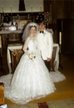

The Kleinsorge Family Tree - Person Sheet
The Kleinsorge Family Tree - Person Sheet

NameKLEINSORGE, Billy Earl 
BirthOct 29, 1951, Gridley, Kansas
FatherKLEINSORGE, Earl William (1919-1999)
MotherPHILLIPS, Eudene May (1927-2013)
Spouses
BirthOct 6, 1951, Cottonwood Falls, Kansas
MarriageMay 29, 1971, Cottonwood Falls, Kansas